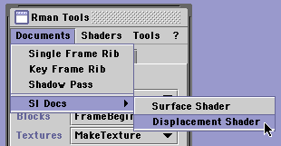
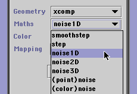

|
Cutter Help
SL Templates and Compiling
[return to index]
- Contents
- Creating a SL Document
- Using On-line docs
- Syntax Coloration
- Compiling a SL Document
- mtor sli files
Creating a SL Document
Cutter can create template shading language (SL) documents, however, as of version
1.8.0 only two types of templates are supported.
From the Rman Tools Documents->SL Docs popup menu choose either a surface
or a displacement shader.

Cutter will open a new document window containing
template code and at the same time it will activate the Rman Tools SL tab. The
popups shown under the SL tab list the functions built into the shading language.
The functions are grouped into four types, namely,
Geometry - 17 functions
Maths - 27 functions
Color - 4 function + 1 global variable
Mapping - 5 functions
Selecting a function, for example, noise1D from the Maths popup,

will insert the function into your source code file. For example,
float noise1D = noise(s);
Cutter makes no attempt to understand the context in which the function will
be used. In most cases you will need to declare a variable to store a value
returned from the function. Cutter will suggest a variable name as well as
give its data type. In the example shown above it would be up to you to decide
how the variable noise1D would be used within the body of the shader.
Using On-line docs
To obtain information about a function, data type or global variable, press the
option key and double-click on its name. Cutter will display the relevant PIXAR
documentation for the function, data type or global you have selected.
To find the relevant documentation Cutter points its web browser
at the URL specified in Preferences. For example,
|